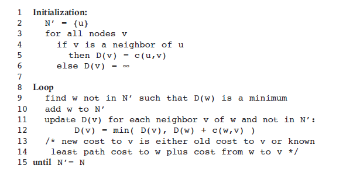
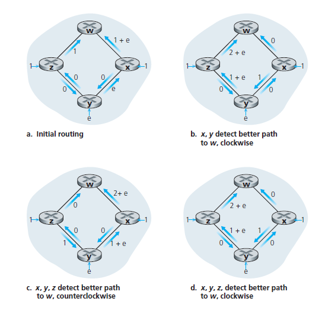

CHAPTER 4.5.1 The Link-State (LS) Routing Algorithm
The problem of routing a packet from source host to destination host clearly boils down to the problem of routing the packet from source router to destination router
The purpose of a routing algorithm is then simple: given a set of routers, with links connecting the routers, a routing algorithm finds a “good” path from source router to destination router.
A global routing algorithm computes the least-cost path between a source and destination using complete, global knowledge about the network. That is, the algorithm takes the connectivity between all nodes and all link costs as inputs. This then requires that the algorithm somehow obtain this information before actually performing the calculation. The calculation itself can be run at one site
The key distinguishing feature here is that a global algorithm has complete information about connectivity and link costs.
algorithms with global state information are often referred to as link-state (LS) algorithms, since the algorithm must be aware of the cost of each link in the network.
In a decentralized routing algorithm, the calculation of the least-cost path is carried out in an iterative, distributed manner. No node has complete information about the costs of all network links.
A In static routing algorithms, routes change very slowly overdistance-vector (DV) algorithm
In static routing algorithms, routes change very slowly over time, often as a result of human intervention
Dynamic routing algorithms change the routing paths as the network traffic loads or topology change.
The LS Algorithm
Each node broadcast link-state packets to all other nodes in the network
Dijkstra’s algorithm
D(v): cost of the least-cost path from the source node to destination v as of this iteration of the algorithm.
p(v): previous node (neighbor of v) along the current least-cost path from the source to v.
N' : subset of nodes; v is in N' if the least-cost path from the source to v is definitively known.

Fig1. Dijkstra Shortest Path Algorithm
Oscillations with congestion-sensitive routing can happen where link costs are equal to the load carried on the link

Fig2. Oscillation with congestion-sensitive routing/figcaption>
One solution would be to mandate that link costs not depend on the amount of traffic carried
Another solution is to ensure that not all routers run the LS algorithm at the same time.